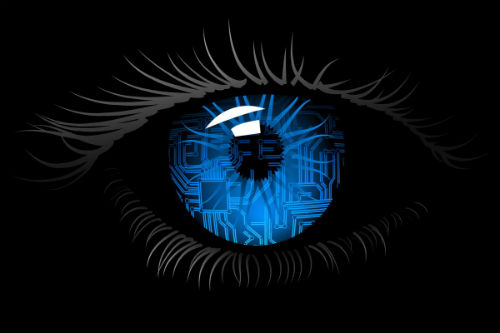

Vamos, que aunque se inventó para cosas de reyes y guerreros y espías, en el mundo moderno se usa una barbaridad.

Las primeras técnicas que se utilizaron fueron de cifrado simétrico. El cifrado simétrico utiliza una clave para encriptar el mensaje para que no se entienda lo que dice y la misma clave para volver a obtener el original. Por ejemplo, imaginad que en el mensaje cambiamos las letras “A” por letras “B”, las “B” por “C”, las “C” por “D”, etc. ¿Y la “Z”? Bueno, pues la “Z” por la “A”. Entonces tenemos un mensaje cifrado en el que la clave sería “1”, que es el número de letras que se desplazan. Por ejemplo, si queremos cifrar:
“NF FÑDBÑUB QFRVFOP MJCSP EF ÑPUBT”
Que no se entiende nada.
¿Qué problema tiene esto? Pues que como hay letras que aparecen más veces que otras, por ejemplo las vocales, uno puede llegar a averiguar qué clave se está utilizando para obtener el mensaje cifrado.v